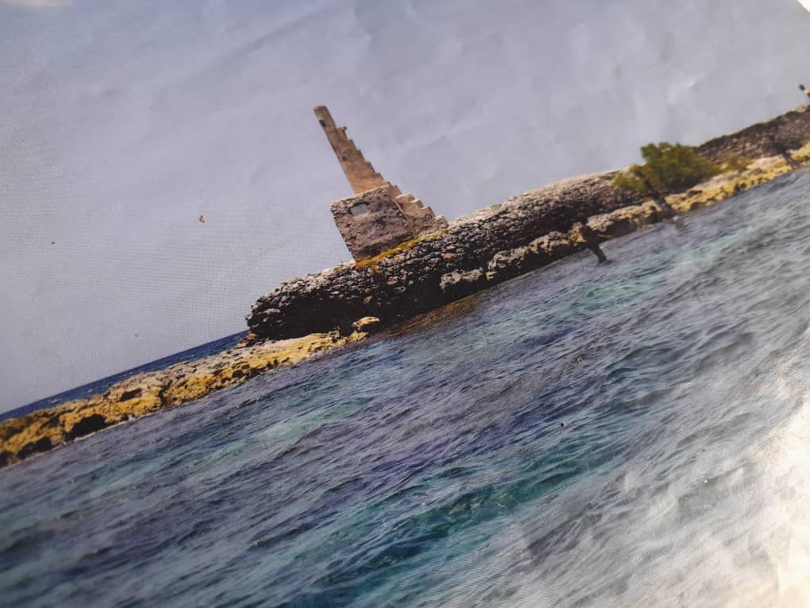
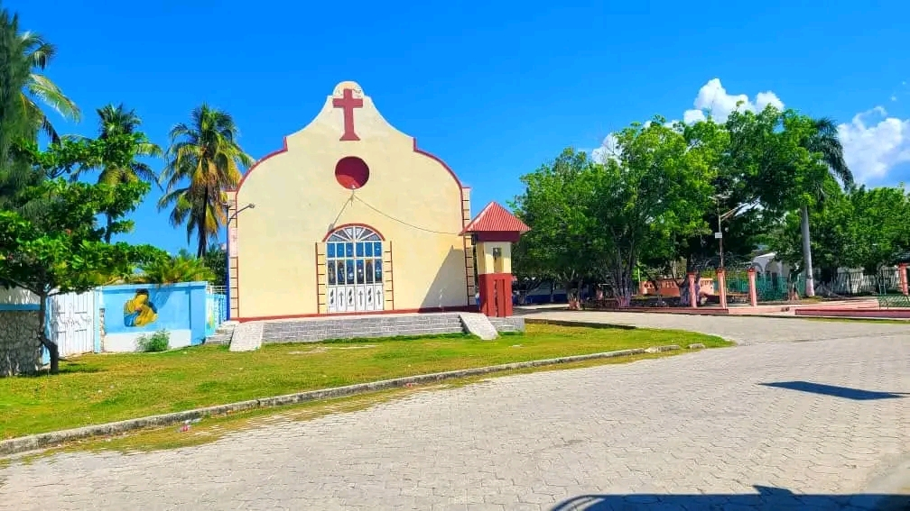
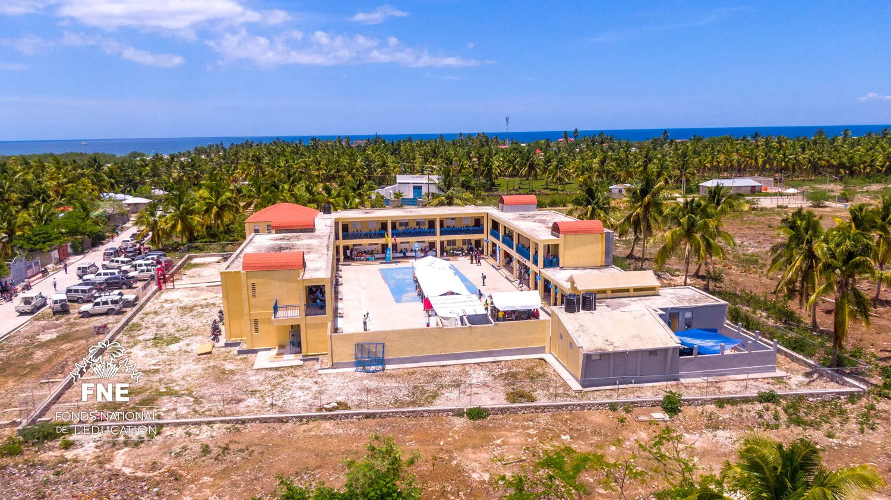

PETIT-TROU DE NIPPES — UN JOYAU À DÉCOUVRIR

Fort de la Nativité

Paroisse Nativité

La Rue de Petit-Trou

Lycée National Technique Pgricoles de Petit-Trou de Nippes
Un coin de paradis habite la partie nord-ouest de la péninsule d'Haïti, la ville de Petit-Trou-de-Nippes. La commune est située juste à l'est de la presqu'île des Baradères avec laquelle elle est reliée par un chapelet d'îlots qui ferme la baie des Baradères. Non seulement les plages subliment des étendues d'une beauté sans pareille, mais l'architecture de Petit-Trou-de-Nippes est aussi un objet de splendeur. Le bâtiment de l'Hôtel de Ville impressionne par sa grandeur et son charme historique. Et l’église catholique Notre Dame Nativite dégage une aura de la période coloniale en Haïti.